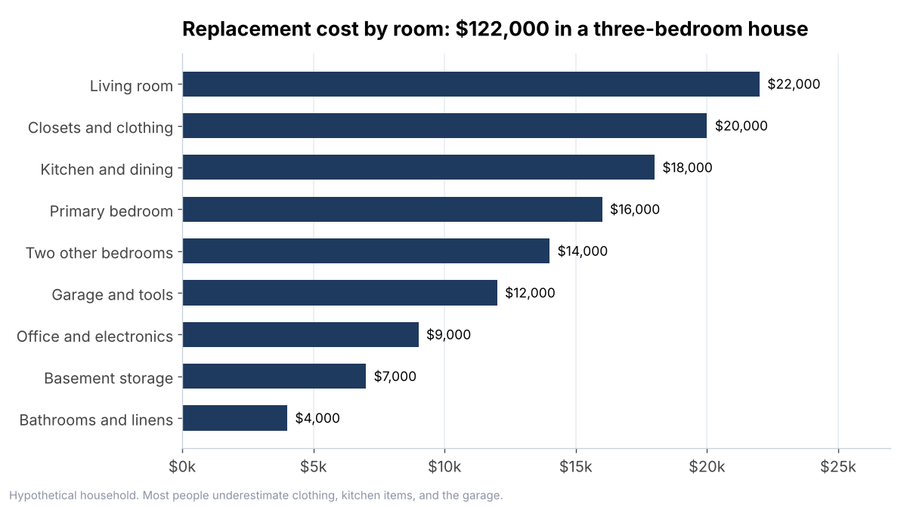
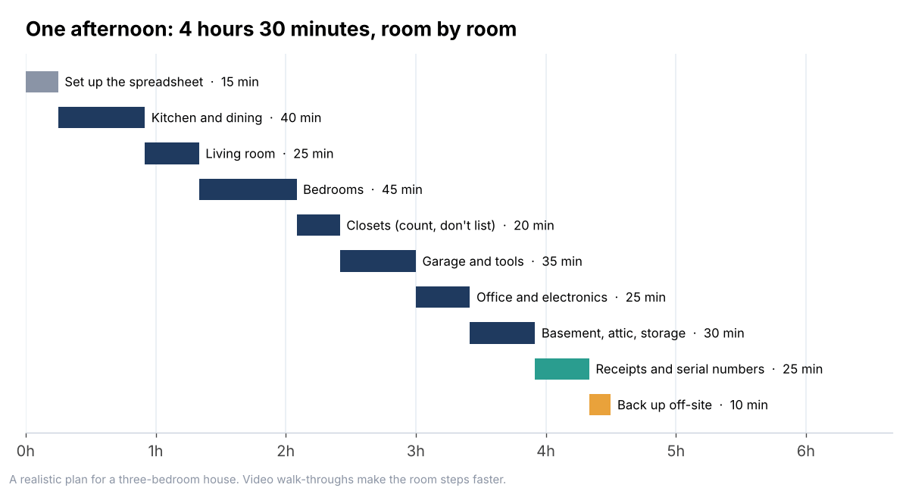
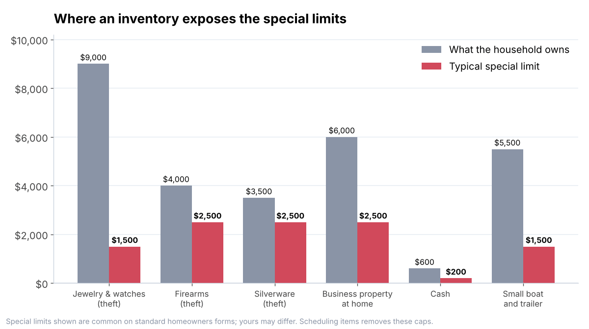

Build a home inventory in one afternoon: a spreadsheet layout adjusters can use
After a fire, a burglary, or a burst pipe, the insurance company will ask you for a list of everything that was damaged or lost, with descriptions, ages, and prices. Most people try to build that list from memory, in a hotel room, weeks after the event. It's slow and painful, and it reliably leaves things out.
A home inventory made in advance turns that job into an export. This chapter covers a spreadsheet layout that matches what adjusters ask for, a room-by-room plan that fits into one afternoon, how to capture serial numbers and receipts without listing every sock, and where an inventory shows you're underinsured before it matters.
What an adjuster actually needs
A contents claim is a list of line items. For each one, the insurer usually wants:
| Field | Why it matters | Example |
|---|---|---|
| Room | Shows the item was in the damaged area | Living room |
| Description | Lets the adjuster price a like-kind replacement | 3-seat fabric sofa, 84 in. |
| Brand or maker and model | Separates a $400 item from a $4,000 one | (maker), model number |
| Quantity | Avoids one line per identical item | 6 dining chairs |
| Age or purchase year | Used to calculate depreciation | 2019 |
| Original price or replacement price | Starting point for valuation | $2,400 |
| Proof | Photo, receipt, bank record, or manual | Photo 14, receipt PDF |
| Serial number | Needed for electronics and theft reports | (on the label) |
Make one sheet with these columns and one row per item or group of identical items. Save it as both a spreadsheet and a CSV. Many insurers accept contents lists in a spreadsheet, and the CSV opens in anything.
How much is in a typical house
Contents add up faster than people expect. Here is a hypothetical three-bedroom house, priced at today's replacement cost:

Compare your total with the personal property limit (often called Coverage C) on your declarations page. On many homeowners policies it's set at 50% to 70% of the dwelling limit, which may or may not be enough. On a renters policy, you pick the number. An inventory is the only reliable way to know whether you picked the right one.
An afternoon plan, room by room

1. Set up (15 minutes). Create the spreadsheet with the columns above. Make a folder for photos and receipts. Charge your phone.
2. Walk each room on video first (2 to 3 minutes per room). Open every closet, drawer, and cabinet. Narrate what you see: "Sofa, bought 2019, about $2,400." A narrated video is evidence on its own, and it's your checklist for the spreadsheet.
3. Photograph high-value items individually. Anything over about $250, plus anything unusual: art, instruments, collections, tools, bikes. Take a second photo of the label or serial number.
4. Group the rest. Don't list 40 shirts. Write one row: "Men's shirts, 40, mixed casual and dress, avg $35 = $1,400." Do the same for books, kitchenware, towels, and toys. Adjusters accept reasonable groupings.
5. Don't forget the hard-to-see rooms. Garage tools, holiday decorations, sports gear, and the contents of an attic or basement are commonly forgotten in claims and are often worth thousands.
6. Gather proof (25 minutes). Search your email for "order confirmation" and "receipt." Download PDF receipts for big purchases. Bank and card statements also work as proof of purchase.
7. Back up off-site (10 minutes). An inventory stored only in the house burns with the house. Put a copy in cloud storage and send one to someone you trust.
Where the special limits are
Standard homeowners and renters policies cap certain categories, usually for theft, no matter how high the overall personal property limit is. An inventory makes these gaps visible.

If your inventory shows high-value items in a capped category, ask about scheduling them: listing each item with an appraisal so it's covered for a stated value, often with no deductible and broader coverage, including loss. Jewelry, watches, art, instruments, cameras, and collections are common candidates.
Keep it current in five minutes a month
- When you buy something over $250, add a row and save the receipt to the folder the same day.
- Once a year, at your policy renewal, re-shoot the room videos and update the total.
- Compare the total with your personal property limit and the special limits each renewal.
- Mark items you've sold or given away so the list doesn't overstate.
For a broader guide to documenting belongings, including how to store records and what to do right after a loss, see this walk-through on how to document your belongings for insurance.
Renters, condos, and second homes
Renters. The landlord's policy doesn't cover your belongings at all. The inventory is your only way to pick a sensible personal property limit on a renters policy, and renters most often underinsure, partly because furniture bought over years doesn't feel valuable.
Condo owners. Your HO-6 policy covers your belongings and usually the interior finishes and improvements you own. Add improvements to the inventory: upgraded flooring, cabinets, built-ins, and light fixtures. Check the association's master policy to see where its coverage stops.
Second homes and rentals. Furnished vacation homes and furnished rentals need their own inventory. Contents in a home you rent to others may need specific coverage on a landlord or short-term rental policy, not just your homeowners policy.
Storage units and items away from home
Personal property is usually covered away from home, but often with a lower limit, sometimes 10% of the personal property limit, for items in a storage unit. Inventory storage units separately and check that limit. Items in a dorm room, a car, or a family member's home have their own rules, so note where each item is kept.
A sample spreadsheet row
| Room | Description | Qty | Year | Price | Proof | Serial |
|---|---|---|---|---|---|---|
| Office | 27-in. monitor | 2 | 2023 | $340 each | Photo 41, emailed receipt | on label |
| Garage | Cordless drill and impact driver kit | 1 | 2021 | $260 | Photo 77 | on tool |
| Bedroom 2 | Children's books | ~120 | various | $6 avg = $720 | Video 3 at 1:40 | — |
Three rows in this format do more for a claim than twenty lines of free text.
Using the inventory after a loss
- Start from the spreadsheet, not from memory. Filter to the affected rooms.
- Add current replacement prices. For each item, find a like-kind replacement today and record the price and source.
- Keep damaged items until the adjuster says otherwise. Photograph them before disposal.
- Submit in batches. Send the highest-value rooms first. You don't have to finish everything before getting paid for part of it.
- Track what you replace. On replacement-cost policies, depreciation is usually paid after you replace items, so keep the new receipts.
Frequently asked questions
Is a video alone good enough? It's much better than nothing, and adjusters accept it. A spreadsheet makes the claim faster, because you won't have to rewatch hours of video to build a list after the loss.
Do I need receipts for everything? No. Receipts help for expensive items. For everyday items, photos and reasonable descriptions are usually enough.
Should I give my inventory to my insurer now? Not usually. Keep it yourself and update it. Do tell your insurer about high-value items you want to schedule.
Does an inventory lower my premium? Usually not directly. Its value is a faster, more complete claim, and catching coverage gaps before a loss.
Sources and further reading
- Insurance Information Institute: How to create a home inventory
- National Association of Insurance Commissioners: Consumer insurance resources
- Federal Emergency Management Agency: Document and insure your property
Hypothetical figures. General information only, not insurance advice. Special limits vary by policy; check your own policy's special limits section.